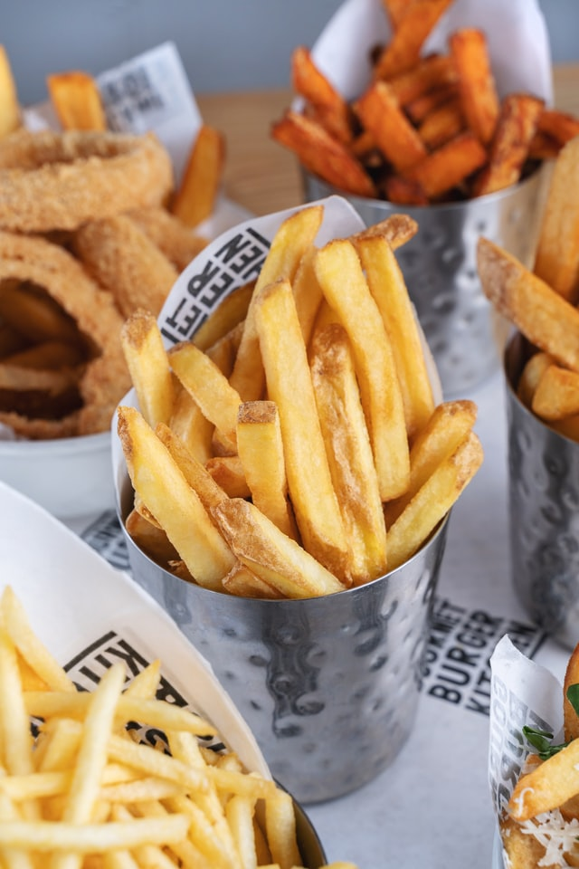

Homemade French Fries

French Fries (Baked or Fried!)
These homemade french fries are potatoes that are cut into sticks and deep fried until golden brown, then sprinkled with seasonings. Homemade fries are WAY better than anything you’d get at a restaurant, and are fun and easy to make
You can never go wrong with potatoes as a side dish, whether it’s baked potato wedges, garlic mashed potatoes or these classic french fries. Pair your fries with a burger, or serve them with steak, and watch the rave reviews come in!
Ingredients
- 2 1/2 pounds Russet potatoes
- Oil for frying I use vegetable or peanut oil
- Salt and pepper to taste
- 1 tablespoon chopped parsley optional
Steps
- Cut the potatoes into matchsticks, either with a knife or with a french fry cutter. The potato pieces should all be similar in size.
- Place the potatoes in a bowl of cold water. Soak the potatoes for at least 30 minutes.
- Drain the water from the potatoes. Place the potatoes on a layer of paper towels and pat thoroughly with additional towels until dry.
- Pour 3 inches of oil into a large, deep pot. Heat the oil to 300 degrees F.
- Place about 1/3 of the potatoes in the pot, and cook until tender. This takes about 4-5 minutes. Repeat the process with the remaining potatoes.
- Sprinkle salt and pepper to taste over the fries. Add parsley if desired, then serve immediately.